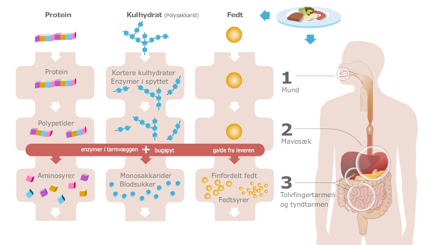
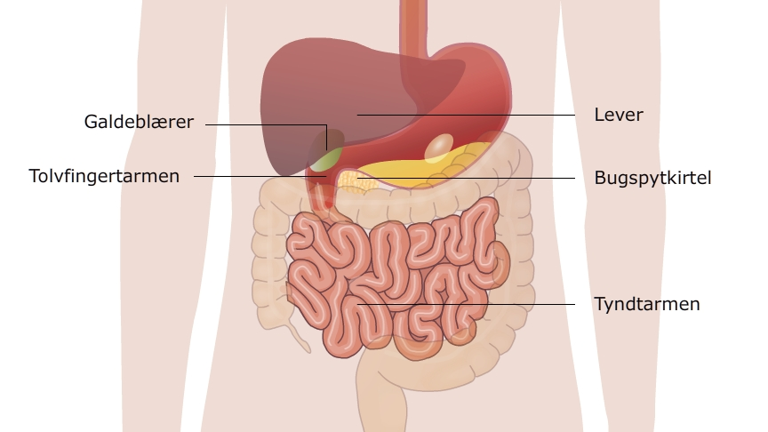

Hvorfor har vi en tolvfingertarm og hvorfor er den så vigtig?
Fra maven kommer maden ind i tolvfingertarmen. Det er her alle de enzymer der skal bruges til at nedbryde maden, bliver tilsat - se skemaet nedenfor.
Enzymerne bliver lavet i bugspytkirtlen, se billedet, der ligger lige ved siden af tolvfingertarmen.
Da tolvfingertarmen kun er ca. 25 cm lang kan enzymerne og galden ikke nå at nedbryde maden helt i tolvfingertarmen, men nedbrydningen fortsætter i tyndtarmen der kommer bagefter tolvfingertarmen.
I tolvfingertarmen bliver resten af de enzymer og galden tilsat maden så den endelige nedbrydning kan finde sted her og i den efterfølgende tyndtarm.